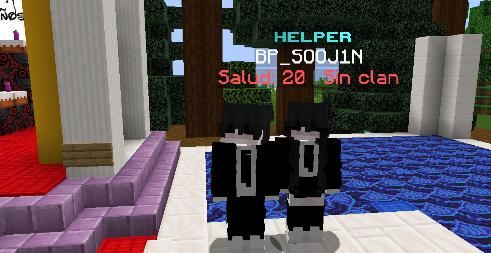

Nuestros Artistas

Chino Sanchéz
Javier Alejandro Benavides Davila, conocido como Chino Sánchez, o el Rey del Corrido, es un cantante y compositor mexicano. Se especializó en los géneros de corrido y ranchera.

el chifu
Branon Maldonado Montano, más conocido por su nombre artístico "chifu", es un rapero, compositor y productor chino. Es conocido localmente por sus videos humorísticos y actuaciones, e internacionalmente es conocido por sus videos onde' le bailan

el bellako
William Omar Reyes Flores, mejor conocido como el que mato a Saul, es un compositor de música clasica y armonica. Es conocido por todos por el video "Que cerveza prefieres"

Xipermine Music Group
Sunwoo y xZJpcRl son los encargados de crear y producir música del estilo electronica para servidores de Minecraft.